Sidebar, Fall 2016
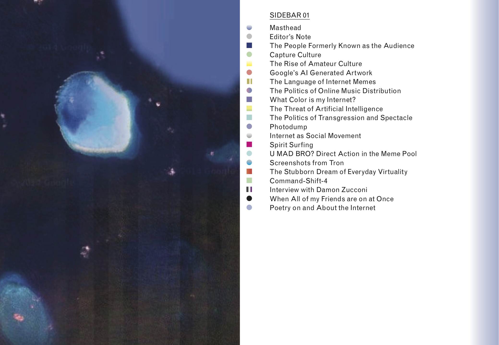 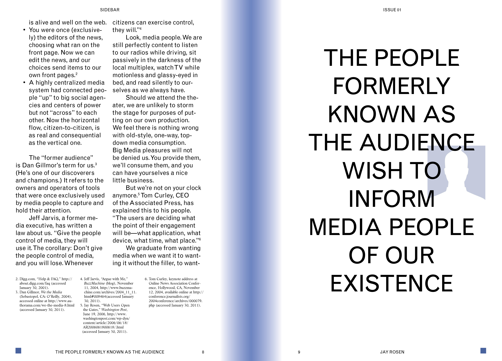 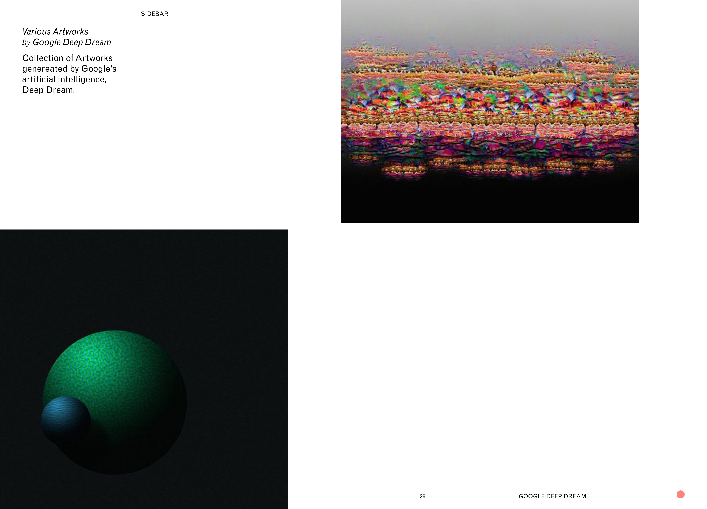 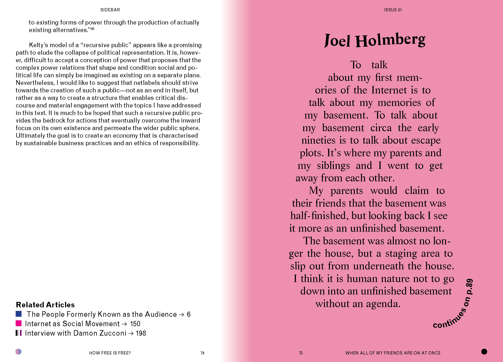 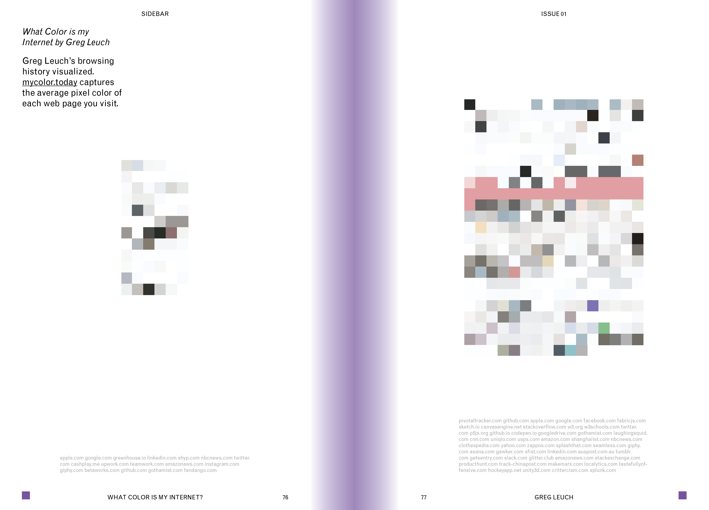 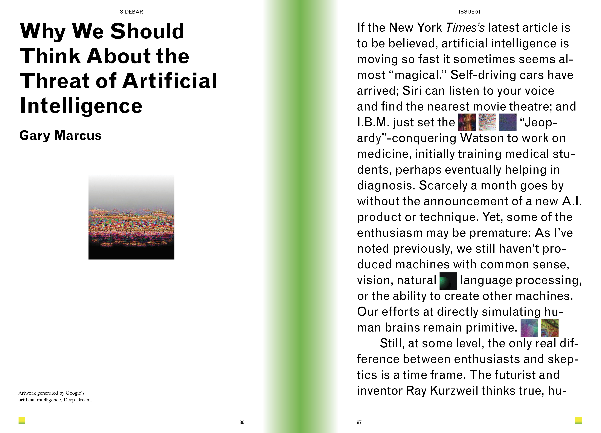 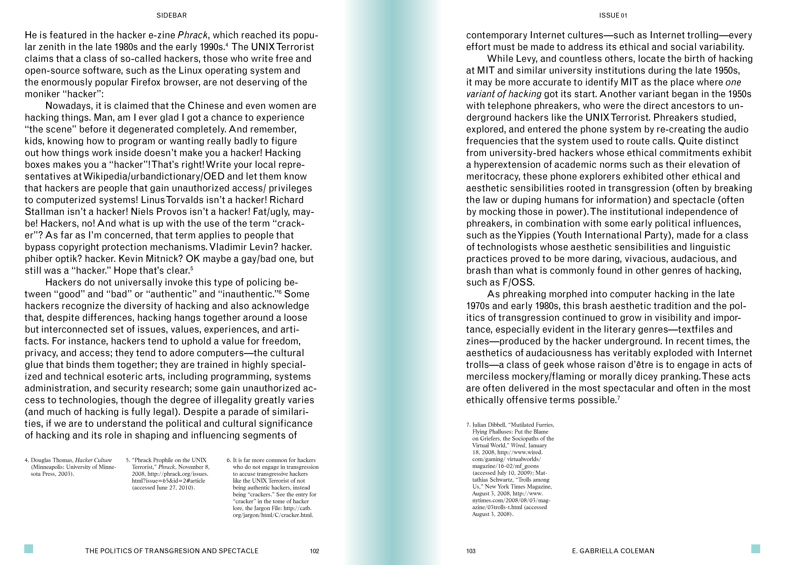 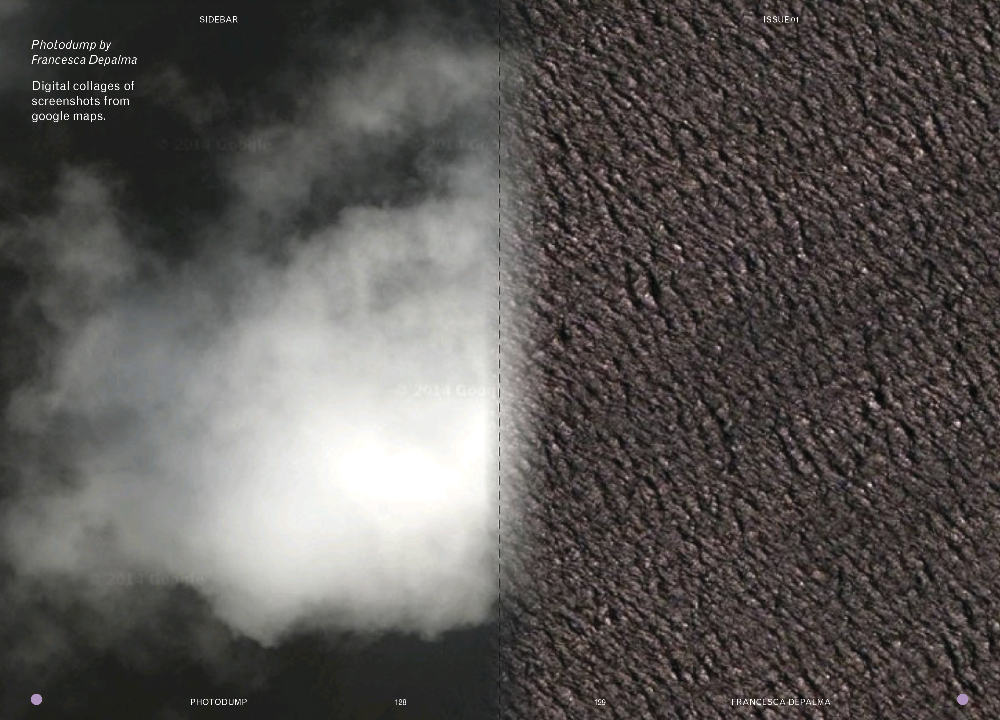 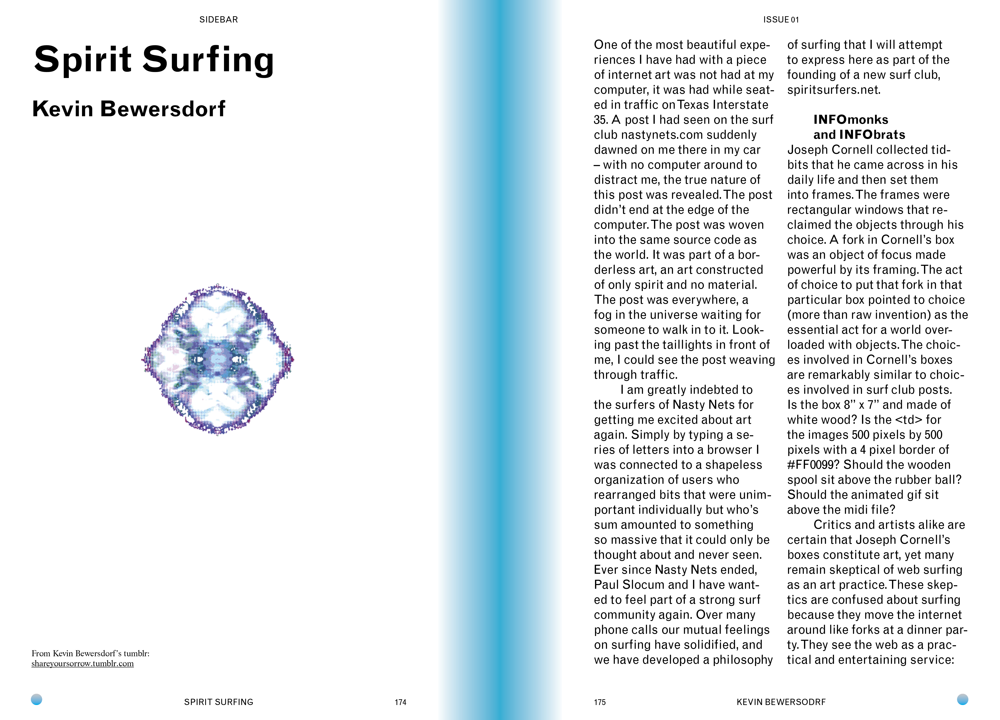 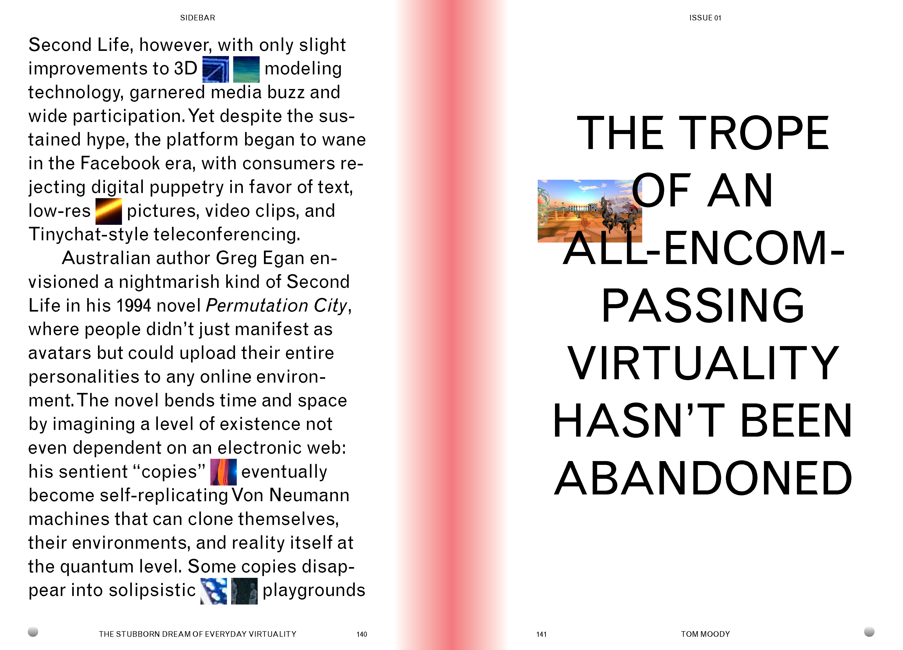 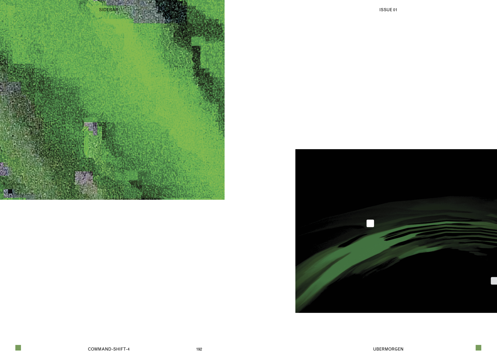 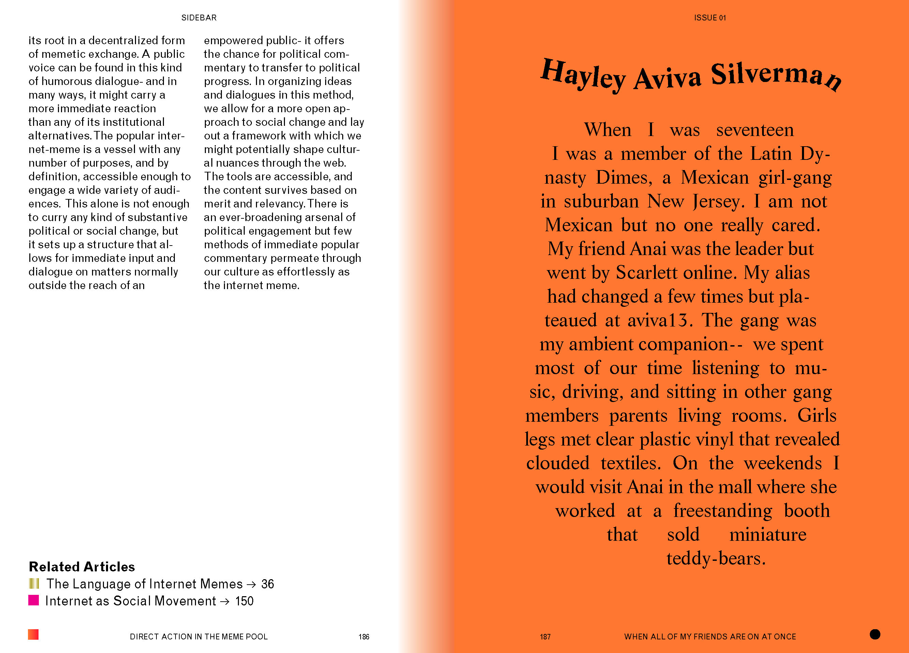Sidebar is a publishing platform about internet culture. The journal typically features philosophical writings, personal stories, poetry, fine art, and theories, focussed on the internet.
Issue 01 includes academic writings about internet culture intersected with anecdotal writings from artists about their first memories online. The journal walks the line between serious and playful which is echoed in its design.
Every article in the journal is given its own "favicon". At the end of each article the reader is presented with a list of related articles, encouraging the reader jump around in a non-linear fashion.